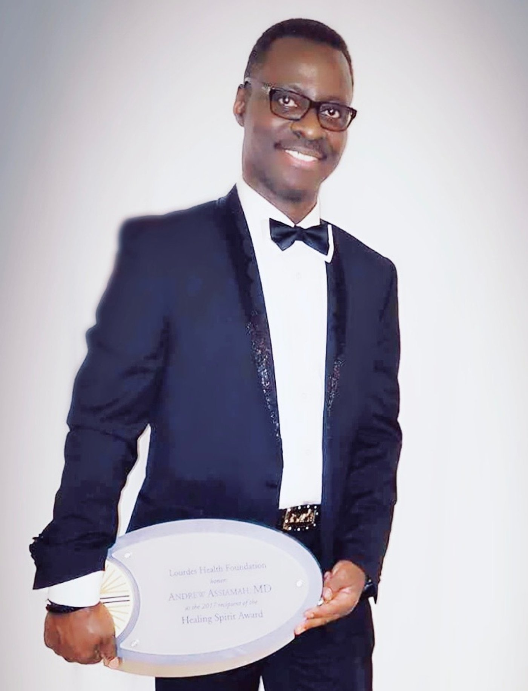

A Legacy of Steady Hands

Dr. Andrew AssiamahDoctor of Medicine · Anesthesiology
In loving memory · May 18, 2026
For more than two decades, he was the last voice patients heard before surgery — and the quiet reason they woke up safely on the other side.
Live Now
Gathered together, wherever you are
The family is streaming live — thank you for being here with them. If the video above doesn't load (some browser privacy extensions block embedded players), watch directly on Twitch ↗.
His Work
The specialty nobody applauds —
because it worked.
Anesthesiology is medicine's quietest discipline. Patients meet their anesthesiologist minutes before the most vulnerable hours of their lives, place their consciousness in his hands, and — when everything goes right — remember almost nothing. Dr. Andrew Assiamah spent his career making sure everything went right.
Trained at Rutgers Robert Wood Johnson Medical School (M.D., Class of 2000), he completed an internal medicine internship and then his anesthesiology residency at Rutgers Health in 2004. Board-certified and licensed in New Jersey, Pennsylvania, and Virginia over the course of his career, he rose to serve as Chief of Anesthesiology at Lourdes Medical Center of Burlington County, leading the department trusted with every operation in the building.
He spent his final years with Hackensack Meridian Health at Riverview Medical Center and Bayshore Medical Center, based in Red Bank, New Jersey — more than twenty years of surgeries, without ever needing the spotlight. He passed away on May 18, 2026, leaving behind a family, colleagues, and thousands of patients who woke up safely because he was there.
-
January 12, 1965
BornGhana
-
2000
Doctor of MedicineRutgers Robert Wood Johnson Medical School
-
2000 – 2004
Internship & Anesthesiology ResidencyRutgers Health — internal medicine, then anesthesiology
-
2004
Board-certified · Licensed to practiceNew Jersey, then Pennsylvania and Virginia
-
Career
Chief of AnesthesiologyLourdes Medical Center of Burlington County — Willingboro, NJ
-
2017
Lourdes Healing Spirit AwardLourdes Health Foundation — Philadelphia
-
Final Years
Attending AnesthesiologistHackensack Meridian Health — Riverview & Bayshore Medical Centers, Red Bank, NJ
-
May 18, 2026
In loving memoryRemembered by his family, his colleagues, and every patient who woke up safely
Honors
The Healing Spirit Award
“Honoring a Lourdes physician for compassion, dedication to patients, and years of service.”
Gallery
A life in practice
From Ghana to New Jersey — moments gathered by his family.
Memories from his family — swipe, or let them drift
Give
Honor his work where it happened
Dr. Assiamah's career belongs to two institutions: the Lourdes health system, where he led anesthesiology and earned the Healing Spirit Award, and Hackensack Meridian Health, where he practiced until his passing. Both foundations turn gifts directly into patient care.
Virtua Health Foundation
The Lourdes Health Foundation's mission continues under Virtua Health, which now operates Virtua Our Lady of Lourdes. Gifts support the same South Jersey communities Dr. Assiamah served as Chief of Anesthesiology.
Give to Virtua · LourdesHackensack Meridian Health Foundation
Supports Riverview Medical Center, Bayshore Medical Center, and the wider HMH network where Dr. Assiamah practiced — funding equipment, research, and care for patients regardless of means.
Give to HMHBoth donation forms include a “tribute” or “in memory of” option — write Dr. Andrew Assiamah and the hospital will note whose legacy inspired your gift.